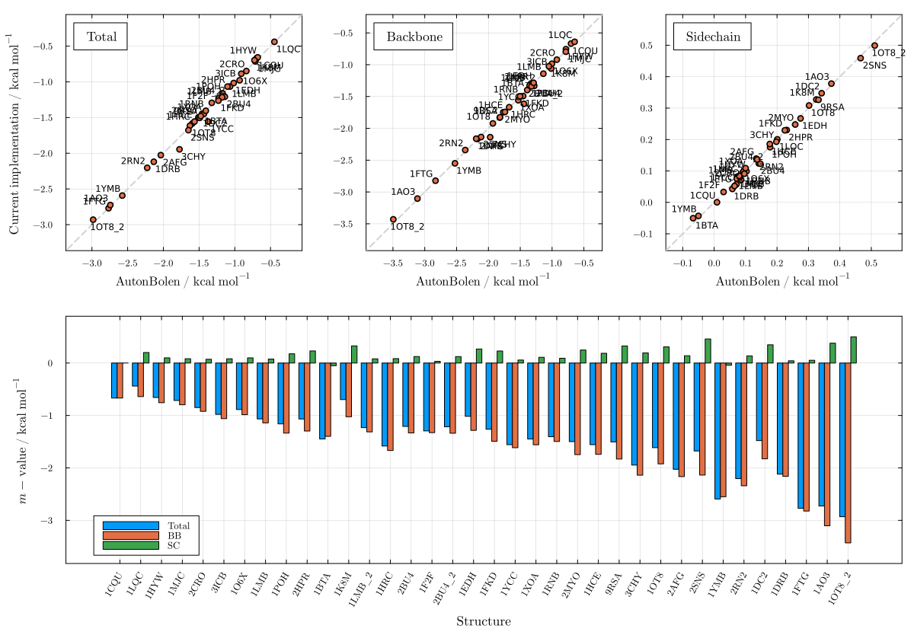
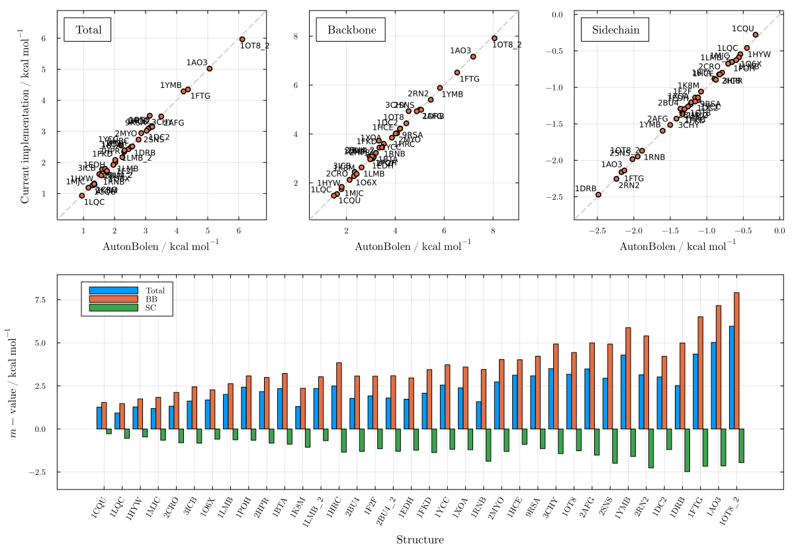
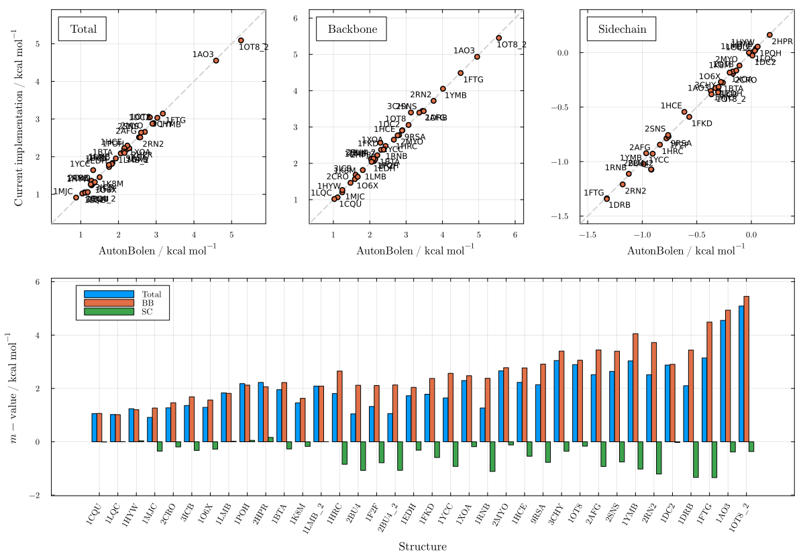
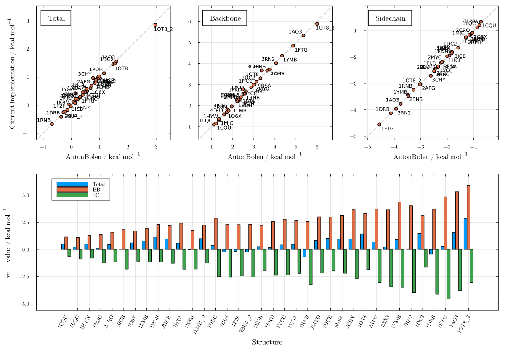
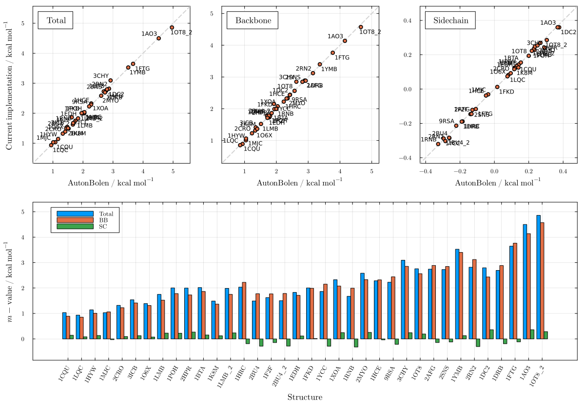
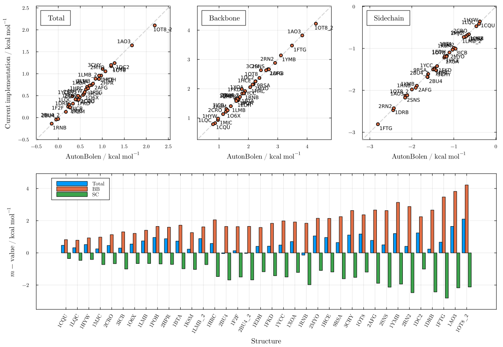
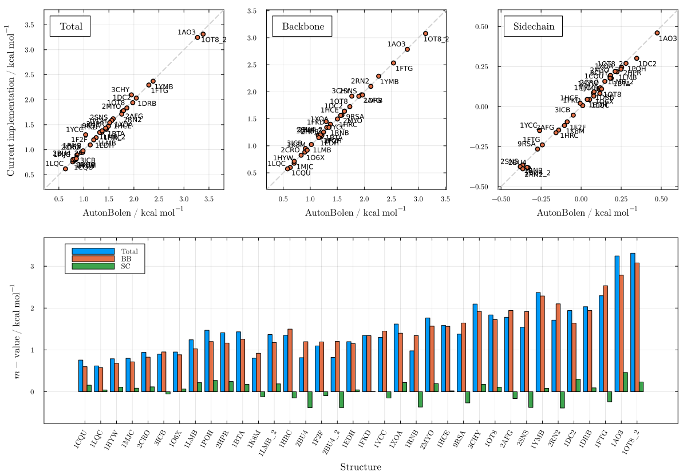
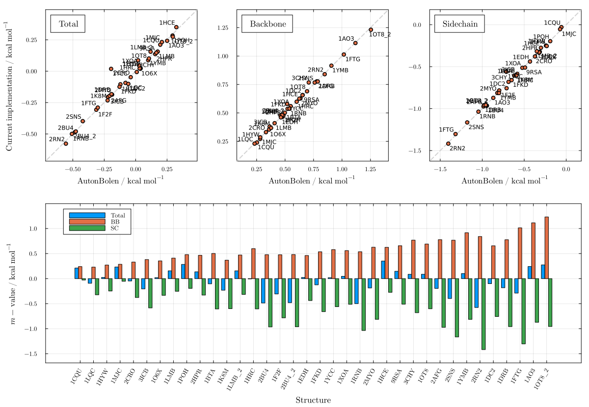
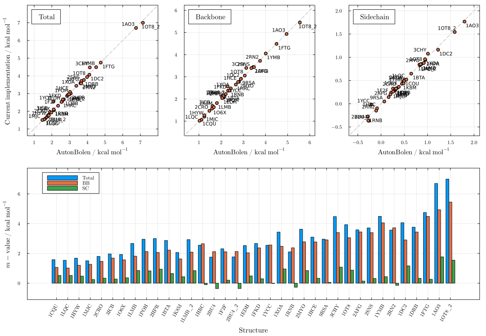

Auton & Bolen (Creamer SASAs)
These plots validate the AutonBolen m-value predictions computed with Creamer denatured-state SASAs against those obtained from the AB server, for all nine cosolvents. The excellent agreement (R² ≈ 1) shown here corresponds to Figure 1 of the paper, confirming that the reparameterized Creamer model is a reliable surrogate for the server SASA across all cosolvents.
using LAPMUrea — Figure S8
plot_mvalue(AutonBolen, "urea")
TMAO — Figure S9
plot_mvalue(AutonBolen, "tmao")
Sucrose — Figure S10
plot_mvalue(AutonBolen, "sucrose")
Betaine — Figure S11
plot_mvalue(AutonBolen, "betaine")
Sarcosine — Figure S12
plot_mvalue(AutonBolen, "sarcosine")
Proline — Figure S13
plot_mvalue(AutonBolen, "proline")
Sorbitol — Figure S14
plot_mvalue(AutonBolen, "sorbitol")
Glycerol — Figure S15
plot_mvalue(AutonBolen, "glycerol")
Trehalose — Figure S16
plot_mvalue(AutonBolen, "trehalose")